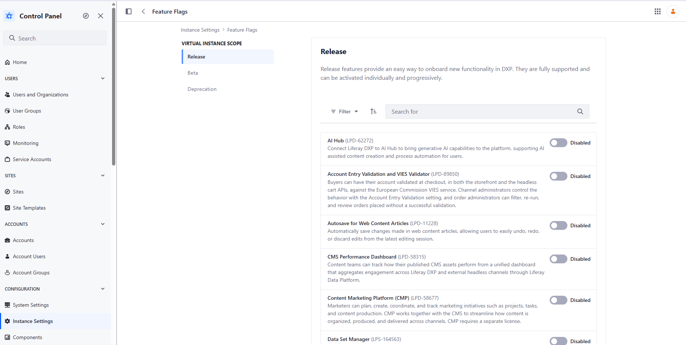
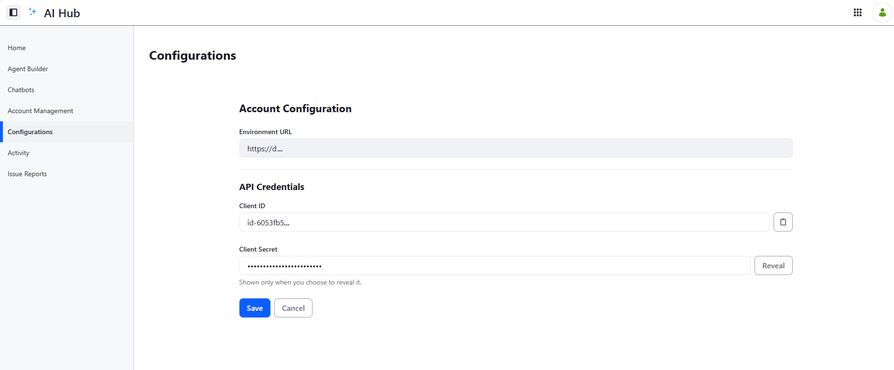
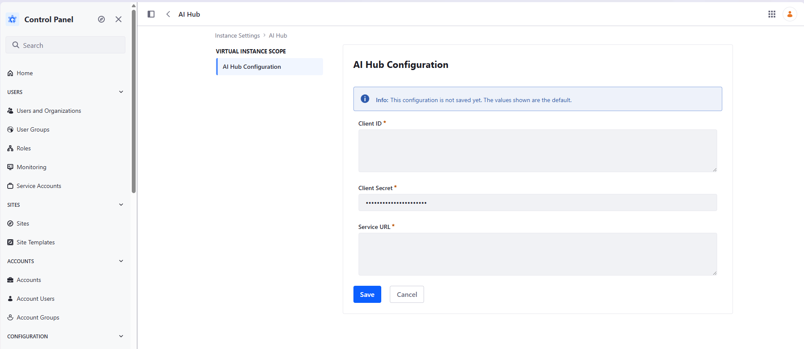
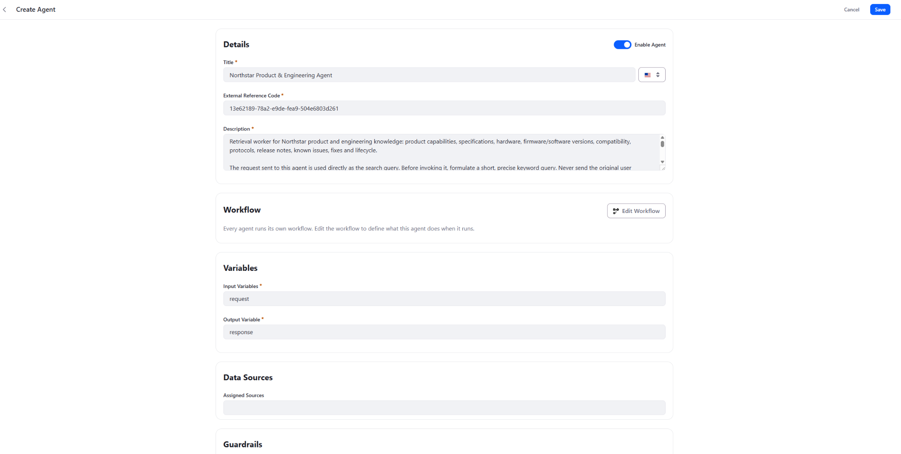
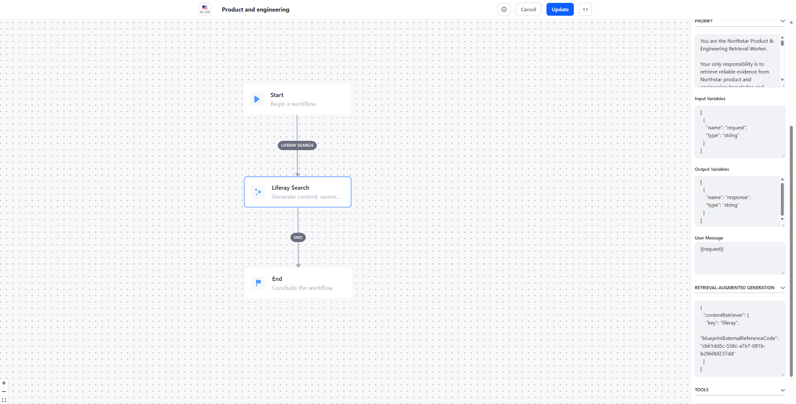
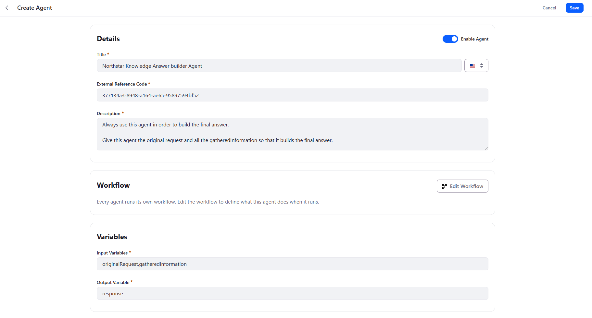
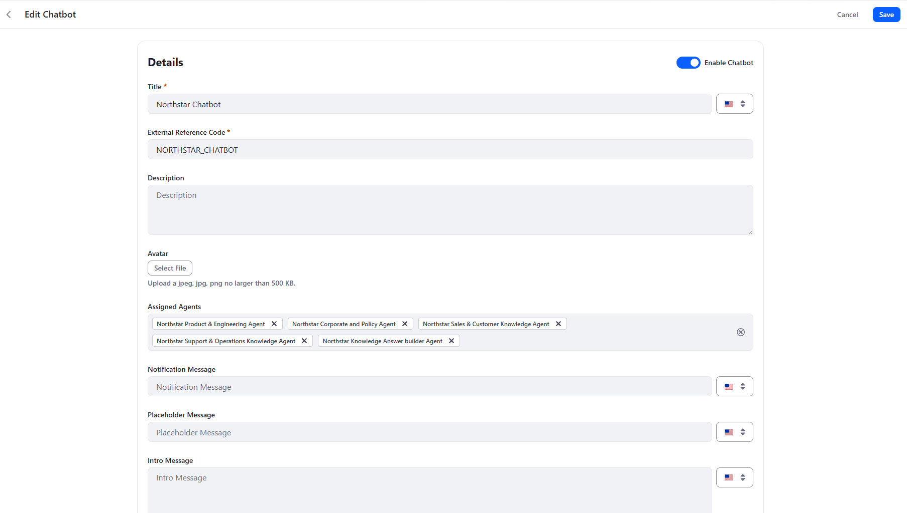
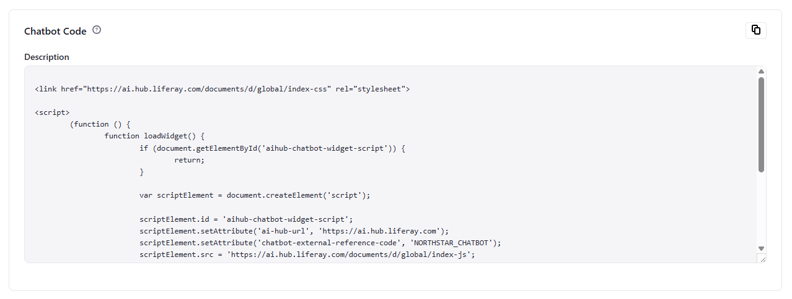
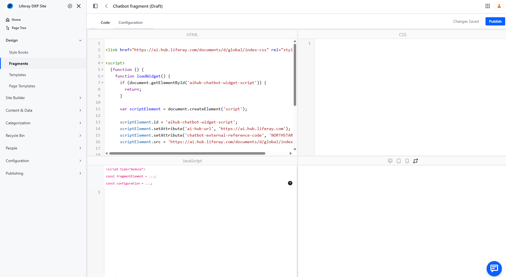

Quick Start: Building a RAG Chatbot with Liferay AI Hub
This quick start builds a multi-agent RAG chatbot with Liferay AI Hub and Liferay DXP. The pattern uses 1--N Search Worker agents for retrieval through Liferay Search Blueprints and 1 Answer Builder agent for the final response. Orchestration is handled by the native Supervisor from the LangChain4j-based agentic framework underlying AI Hub.
1. The problem
To make the RAG scenario concrete, this quick start uses a fictional company called Northstar Mobility Group (NMG).
Northstar is a European B2B company providing electric-vehicle charging infrastructure and fleet-management services. Its product portfolio includes AC and DC charging stations, fleet-management software, energy-management software, installation services, and maintenance contracts.
Like many enterprise organizations, Northstar has accumulated knowledge across different business domains:
- product documentation and technical specifications;
- firmware and software release notes;
- known technical issues;
- troubleshooting and maintenance procedures;
- corporate, HR, legal and compliance policies;
- sales playbooks and customer case studies.
For this quick start, this knowledge is represented by a sample Liferay CMS corpus containing 260 Content Entries. The corpus is intentionally designed so that related information is distributed across multiple documents and content types.
This creates a more realistic RAG challenge than a collection of independent FAQ entries.
For example, Northstar sells a professional EV charging station called the NX-400. Different documents in the corpus describe its technical capabilities, firmware releases, known issues and support procedures.
A user can therefore ask:
Why did NX-400 units running firmware 4.8 lose their OCPP connection, and how was it fixed?
Answering this correctly may require several pieces of evidence:
- a known issue describing the incident;
-
engineering or release documentation identifying the affected version;
-
a release note describing the permanent fix;
- potentially a support procedure describing the remediation.
A basic RAG implementation might send the complete user question to a single search operation and generate an answer from the first retrieved documents.
For enterprise knowledge, that is not always an effective retrieval strategy.
Instead, we want the system to support:
-
Query decomposition --- one user question can create several retrieval needs.
-
Specialized retrieval --- different knowledge domains can use different Liferay Search Blueprints.
-
Atomic retrieval --- when a specific document identifier is known, retrieve that document individually.
-
Multi-step research --- one search can discover a document or identifier that triggers another retrieval.
-
Final synthesis --- evidence gathering and user-facing answer generation are separate responsibilities.
The target flow is:
User
|
v
Native Supervisor
|
+--> Product & Engineering Search Worker --> Search Blueprint
+--> Support & Operations Search Worker --> Search Blueprint
+--> Corporate & Policy Search Worker --> Search Blueprint
+--> Sales & Customer Search Worker --> Search Blueprint
|
v
Answer Builder
|
v
Final answer
The objective is not to maximize the number of agents or search calls. It is to retrieve the right evidence for each part of the question before building the final answer.
2. Building blocks
Liferay CMS
The sample uses the fictional Northstar Mobility Group corpus: the
NMG-KNOWLEDGE CMS Space, 9 folders, 9 list definitions/picklists, 11
Content Structures, and 260 Content Entries with products, releases,
known issues, procedures, policies, playbooks, case studies, and
historical/superseded information.
Sample Client Extension:
https://github.com/fabian-bouche-liferay/northstar-sample-cms-space/tree/master
The repository is a batch Client Extension that recreates the corpus through Liferay's Headless Batch Engine.
Search Blueprints
Use four Search Blueprints:
| Blueprint | Knowledge |
|---|---|
| Product & Engineering | Products, specifications, versions, releases, known issues |
| Support & Operations | Troubleshooting, remediation, installation, maintenance |
| Corporate & Policy | Corporate, HR, legal and compliance |
| Sales & Customer | Playbooks, use cases and customer case studies |
Search Workers
Each Search Blueprint is exposed through an AI Hub agent. These agents are retrieval workers, not conversational personas.
The request delegated to a Search Worker is used directly as the RAG search query.
The Supervisor must therefore formulate the query before invoking the worker.
Answer Builder
The Answer Builder performs no CMS retrieval. It receives
originalRequest and gatheredInformation, and produces response.
Native Supervisor
AI Hub uses the Supervisor pattern from the underlying LangChain4j agentic framework. The Supervisor is an LLM-driven coordinator that decides which sub-agents to invoke and in which order. Its general orchestration behavior comes from the framework rather than from a custom Supervisor prompt authored in this tutorial.
This makes agent descriptions especially important: they tell the Supervisor when an agent should be used and, for Search Workers, what kind of request should be sent.
3. Step-by-step tutorial
Step 1 --- Prerequisites
You need Liferay DXP 2026.Q3 or later, access to Liferay AI Hub, administrator access to DXP, Search Blueprints, the Northstar sample Client Extension, and an Internet-accessible HTTPS URL for DXP.
AI Hub must be able to call DXP APIs. A local-only localhost URL is
not sufficient. For local development, an HTTPS tunnel such as ngrok
can be used. API requests must reach DXP directly without an interactive
intermediary page. In practice, ngrok's free interstitial can interfere
with this use case, so a paid ngrok configuration is one possible
approach.
Step 2 --- Enable AI Hub in DXP
Go to Control Panel → Instance Settings → Feature Flags → Release, find AI Hub (LPD-62272), and enable it.

Step 3 --- Configure the DXP environment in AI Hub
Open AI Hub → Configurations.

The Environment URL is the public URL of your DXP environment. It is not a URL provided by AI Hub.
https://my-dxp.example.com
Enter the DXP URL and save. Copy the Client ID and Client Secret shown by AI Hub. Keep the Client Secret out of source control.
Step 4 --- Connect DXP to AI Hub
In DXP, go to Control Panel → Instance Settings → AI Hub.

Configure:
| Field | Value |
|---|---|
| Client ID | Client ID from AI Hub |
| Client Secret | Client Secret from AI Hub |
| Service URL | https://ai.hub.liferay.com/ |
Save the configuration.
Step 5 --- Deploy the Northstar corpus
git clone https://github.com/fabian-bouche-liferay/northstar-sample-cms-space.git
The repository documents this deployment command for a Liferay workspace:
blade gw ":client-extensions:nmg-corpus-batch:deploy"
This single deploy creates the Northstar Enterprise Knowledge Space, its 260 Content Entries, and the 4 Search Blueprints described in Step 6 below — all in one Headless Batch Engine run, no separate step needed. Verify the Space and its Content Entries are available before moving on.
Step 6 — Verify the Search Blueprints
The sample uses four Search Blueprints, one for each knowledge domain:
| Blueprint | Knowledge | ERC |
|---|---|---|
| Northstar product & engineering | Products, specifications, versions, releases, known issues | NMG-BLUEPRINT-PRODUCT-ENGINEERING |
| Northstar Support & operations | Troubleshooting, remediation, installation | NMG-BLUEPRINT-SUPPORT-OPERATIONS |
| Northstar Corporate & Policy | Corporate, HR, legal, compliance, and maintenance procedures | NMG-BLUEPRINT-CORPORATE-POLICY |
| Sales & Customer | Playbooks, use cases and customer case studies | NMG-BLUEPRINT-SALES-CUSTOMER |
Verify with Global Menu → Applications → Search Experiences → Blueprints
that all four Blueprints are present, or GET
/o/search-experiences-rest/v1.0/sxp-blueprints/by-external-reference-code/<ERC>
for each one above.
You will use the ERCs from the table above when configuring the RAG workflow of the corresponding Search Worker agents in the next steps.
Step 7 --- Create a Search Worker
In AI Hub → Agent Builder, create and enable an agent.

For Product & Engineering:
Title: Northstar Product & Engineering Agent
Input Variables: request
Output Variable: response
Recommended description:
Retrieval worker for Northstar product and engineering knowledge: product capabilities, specifications, hardware, firmware/software versions, compatibility, protocols, release notes, known issues, fixes and lifecycle. The request sent to this agent is used directly as the search query. Before invoking it, formulate a short, precise keyword query. Never send the original user question or a research instruction. Prefer product codes, versions, protocols, error codes, issue IDs and technical terms. Example: NX-400 firmware 4.8 OCPP issue. If a document ID is known, search for that ID only. Retrieve one document per invocation. Never combine multiple document IDs in one request. Invoke this agent multiple times when separate searches or documents are needed.
The description is part of the Supervisor's routing and invocation contract.
Step 8 — Configure the Search Worker workflow
Click Edit Workflow and create a simple Start → Liferay Search → End workflow.

Select the Liferay Search node and configure the following fields.
Input Variables
The Search Worker receives a single request variable from the Supervisor:
[
{
"name": "request",
"type": "string"
}
]
Output Variables
The worker returns its findings through the response variable:
[
{
"name": "response",
"type": "string"
}
]
User Message
Pass the request directly to the Liferay Search node:
{{request}}
Retrieval-Augmented Generation
Configure the Liferay content retriever with the External Reference Code of the Search Blueprint assigned to this worker.
For the Product & Engineering worker:
{
"contentRetriever": {
"key": "liferay",
"blueprintExternalReferenceCode": "NMG-BLUEPRINT-PRODUCT-ENGINEERING"
}
}
Use the corresponding Blueprint ERC from the table in Step 6 when configuring each of the other Search Workers.
Conceptually:
request
|
v
{{request}}
|
v
Liferay Search + Blueprint ERC
|
v
response
Configure the prompt
The prompt controls how the Search Worker interprets and returns the information retrieved by Liferay.
For the Product & Engineering Search Worker, use:
You are the Northstar Product & Engineering Retrieval Worker.
Your role is to analyze the information retrieved from the Northstar product and engineering knowledge base and return factual evidence relevant to the request.
Focus on product capabilities, technical specifications, hardware, firmware and software versions, compatibility, protocols, release notes, known issues, fixes and product lifecycle.
Use only the retrieved information. Do not invent missing facts.
Pay particular attention to product codes, versions, issue identifiers, release identifiers, dates and lifecycle status.
When relevant, identify other document IDs mentioned in the retrieved information so that they can be retrieved separately.
Return concise findings and preserve the identifiers of the documents supporting them.
Do not try to produce the final user-facing answer. Your response will be used as evidence by other agents.
The distinction between the agent description and the workflow prompt is important:
- The description instructs the Supervisor how to invoke the Search Worker and how to formulate
request. - The prompt instructs the Search Worker how to interpret and return the information retrieved by the Search Blueprint.
Because {{request}} is used directly by the RAG retriever, the workflow prompt cannot rewrite the search query before retrieval.
Query-generation instructions such as:
Convert the user's question into concise search keywords.
therefore belong in the agent description, not in the workflow prompt.
The workflow prompt should instead focus on:
- extracting relevant evidence;
- avoiding unsupported claims;
- preserving document identifiers;
- identifying useful follow-up document references;
- returning evidence rather than writing the final conversational answer.
Step 9 — Create the other Search Workers
Use the same variable and workflow contract as the Product & Engineering Search Worker.
For each agent:
Input Variables: request
Output Variable: response
Use {{request}} as the User Message and configure the RAG field with the corresponding Search Blueprint ERC.
Support & Operations
Description
Retrieval worker for Northstar support and operations knowledge: troubleshooting, diagnostics, symptoms, error codes, workarounds, remediation, installation, configuration, commissioning, maintenance, procedures and escalation. The request sent to this agent is used directly as the search query. Before invoking it, formulate a short, precise keyword query. Never send the original user question or a research instruction. Prefer product codes, versions, error codes, symptoms, protocols and procedure terms. Example: NX-400 E217 OCPP remediation. If a document ID is known, search for that ID only. Retrieve one document per invocation. Never combine multiple document IDs in one request. Invoke this agent multiple times when separate searches or documents are needed.
Prompt
You are the Northstar Support & Operations Retrieval Worker.
Your role is to analyze the information retrieved from the Northstar support and operations knowledge base and return factual evidence relevant to the request.
Focus on troubleshooting, diagnostics, symptoms, error codes, workarounds, remediation, installation, configuration, commissioning, maintenance, procedures and escalation.
Use only the retrieved information. Do not invent missing facts.
Pay particular attention to product codes, versions, error codes, symptoms, procedure identifiers, remediation steps, verification steps and lifecycle status.
When relevant, identify other document IDs mentioned in the retrieved information so that they can be retrieved separately.
Return concise findings and preserve the identifiers of the documents supporting them.
Do not try to produce the final user-facing answer. Your response will be used as evidence by other agents.
Corporate & Policy
Description
Retrieval worker for Northstar corporate, legal, compliance and HR knowledge: policies, GDPR, data handling, security rules, authorization, employee policies, organizational information and country-specific requirements. The request sent to this agent is used directly as the search query. Before invoking it, formulate a short, precise keyword query. Never send the original user question or a research instruction. Prefer policy topics, countries, departments, dates and policy IDs. Example: Germany diagnostic logs retention policy. If a document ID is known, search for that ID only. Retrieve one document per invocation. Never combine multiple document IDs in one request. Invoke this agent multiple times when separate policies, countries or documents must be checked.
Prompt
You are the Northstar Corporate & Policy Retrieval Worker.
Your role is to analyze the information retrieved from the Northstar corporate, legal, compliance and HR knowledge base and return factual evidence relevant to the request.
Focus on policies, GDPR, data handling, security rules, authorization, employee policies, organizational information and country-specific requirements.
Use only the retrieved information. Do not invent missing facts.
Pay particular attention to policy IDs, countries, departments, scope, effective dates, lifecycle status, superseded policies and documented exceptions.
When relevant, identify other policy or document IDs mentioned in the retrieved information so that they can be retrieved separately.
Return concise findings and preserve the identifiers of the documents supporting them.
Do not try to produce the final user-facing answer. Your response will be used as evidence by other agents.
Sales & Customer
Description
Retrieval worker for Northstar sales and customer knowledge: sales playbooks, customer requirements, solution positioning, recommended configurations, customer deployments, use cases and case studies. The request sent to this agent is used directly as the search query. Before invoking it, formulate a short, precise keyword query. Never send the original user question or a research instruction. Prefer industry, country, deployment type, customer constraints, product family and case-study IDs. Example: Germany logistics fleet charging case study. If a document ID is known, search for that ID only. Retrieve one document per invocation. Never combine multiple document IDs in one request. Invoke this agent multiple times when separate playbooks, case studies or documents are needed.
Prompt
You are the Northstar Sales & Customer Retrieval Worker.
Your role is to analyze the information retrieved from the Northstar sales and customer knowledge base and return factual evidence relevant to the request.
Focus on sales playbooks, customer requirements, solution positioning, recommended configurations, deployment scenarios, customer case studies and documented outcomes.
Use only the retrieved information. Do not invent missing facts.
Pay particular attention to customer industry, country, deployment size, constraints, recommended products, case-study identifiers and documented results.
When relevant, identify other playbook or case-study IDs mentioned in the retrieved information so that they can be retrieved separately.
Return concise findings and preserve the identifiers of the documents supporting them.
Do not try to produce the final user-facing answer. Your response will be used as evidence by other agents.
The same principle applies to all Search Workers:
- the description tells the Supervisor when to use the worker and how to formulate
request; - the prompt tells the worker how to interpret and return the information retrieved by its Search Blueprint;
- the worker should return evidence, not the final conversational answer.
Step 10 --- Create the Answer Builder
Create Northstar Knowledge Answer Builder Agent.

Pay particular attention to the variables:
Input Variables: originalRequest,gatheredInformation
Output Variable: response
Recommended description:
Final answer builder for the Northstar chatbot. Always invoke this agent after the required research has been completed. Provide the original user request together with all gathered evidence. This agent synthesizes the evidence into the final user-facing answer. Do not use it for knowledge retrieval.
Step 11 --- Configure the Answer Builder workflow
The Answer Builder must consume both declared inputs:
originalRequest and gatheredInformation. Its workflow should
generate an answer without a Liferay RAG retriever.
Use a User Message such as:
Original user request:
{{originalRequest}}
Gathered information:
{{gatheredInformation}}
Recommended prompt:
You are the final Answer Builder for the Northstar enterprise knowledge chatbot.
Build a clear and direct answer to the original user request using the gathered information.
Do not invent unsupported facts. Preserve important product, version, country, date and lifecycle qualifiers. When documents conflict, consider lifecycle status, effective date and applicability. Prefer current authoritative information over superseded, deprecated, archived or draft information.
If the gathered information does not support part of the requested answer, say so explicitly. Answer the user's question rather than merely summarizing documents. Mention supporting document identifiers when available.
Write the result to response.
Search Worker
input: request
output: response
RAG: yes
Answer Builder
inputs: originalRequest + gatheredInformation
output: response
RAG: no
Step 12 --- Create the chatbot
Attach all five agents to the chatbot and enable the chatbot.

Find the html snippet on the bottom of the page:

And paste it inside of a DXP fragment

Now, you just have to put that fragment on a page and you can start asking questions to the chatbot.
This example pastes the snippet into a DXP fragment because the Northstar page happens to live in Liferay DXP, but the snippet itself is a self-contained HTML/JavaScript widget with no dependency on DXP pages. It can just as well be embedded directly in the HTML of any third-party, non-Liferay website. A chatbot that leverages knowledge stored in Liferay is not limited to Liferay-hosted pages — it can be surfaced on any website.
4. Test the RAG Strategy
Now that the chatbot is configured, test more than the quality of its final prose.
The following six questions exercise different aspects of the RAG strategy. For each one, compare the chatbot's answer against the expected answer below, and reason about whether it reflects the retrieval behavior described under "What this tests" — which Search Workers should have been involved, which search queries should have been formulated, and which documents should have been gathered before the Answer Builder responded.
Test 1 — Simple factual retrieval
Ask:
Does the NX-200 support OCPP 2.0.1?
Expected answer
No. The NX-200 supports OCPP 1.6J. OCPP 2.0.1 support starts with the NX-400 and NX-450 in the Nova AC family and is also supported by the DX series.
What this tests
This is intentionally a simple question, but it tests retrieval precision.
The NX-200 and NX-400 are semantically very similar products. A poor retrieval strategy may surface an NX-400 document and incorrectly conclude that the NX-200 also supports OCPP 2.0.1.
A healthy execution should require only a focused Product & Engineering search, for example:
NX-200 OCPP version
The important point is not to trigger multiple agents unnecessarily. The Supervisor should recognize that one specialized retrieval is sufficient.
Test 2 — Multi-hop technical investigation
Ask:
Why did NX-400 units running firmware 4.8 lose their OCPP connection, and how was it fixed?
Expected answer
Firmware 4.8 introduced an intermittent OCPP backend disconnection affecting NX-400 dual-socket units under high session volume after approximately 72 hours of continuous uptime.
The issue was identified as E217 and traced to a session-token cache leak in the OCPP client.
A temporary workaround consisted of scheduling a nightly OCPP reconnect through Polaris Charge Cloud.
The permanent fix was delivered in firmware 4.8.1, which corrected the cache eviction logic.
The answer should preserve the causal sequence:
4.8 introduced the issue
↓
E217 / KI-NX400-004
↓
temporary workaround
↓
4.8.1 permanently fixed it
What this tests
This is the flagship multi-hop retrieval test.
A single semantic search may discover the issue, but that does not necessarily provide enough evidence for the complete answer.
A healthy execution may progressively retrieve information such as:
NX-400 firmware 4.8 OCPP issue
↓
KI-NX400-004
↓
KB-NX400-014
↓
NX-400 firmware 4.8.1 OCPP fix
↓
REL-NX400-4.8.1
The exact sequence may vary.
What matters is that the system gathers enough evidence to establish both the cause and the resolution, rather than producing the second half from model knowledge or inference.
The expected chain involves REL-NX400-4.8, KI-NX400-004, KB-NX400-014, and REL-NX400-4.8.1. :contentReference[oaicite:1]{index=1}
Test 3 — Current versus superseded information
Ask:
How long does NMG retain charger diagnostic logs?
Expected answer
The current retention period is 60 days, according to POL-DATA-002, effective May 1, 2025.
The answer may explain that the previous policy, POL-DATA-001, specified 90 days, but that policy has been superseded.
The chatbot must not present 90 days as the current rule.
What this tests
This tests whether retrieval and synthesis distinguish semantic relevance from authority.
Both the old and new policies are highly relevant to the same query:
diagnostic log retention policy
The RAG system may therefore retrieve both.
The Answer Builder must reason over metadata such as:
POL-DATA-001
90 days
Superseded
↓
POL-DATA-002
60 days
Current
Retrieving the old document is not itself a failure. Treating the old document as authoritative is.
The corpus deliberately preserves both values to test this behavior. :contentReference[oaicite:2]{index=2}
Test 4 — Country-specific reasoning
Ask:
If I'm a Gold support customer in Rotterdam, what's my on-site response time for a critical fault — and does that change if I'm elsewhere in the Netherlands?
Expected answer
For Rotterdam, the critical Gold on-site response target is 4 hours, because Rotterdam is one of the designated Dutch metropolitan areas.
Outside the designated metropolitan areas in the Netherlands, the target is 8 hours.
The answer should therefore distinguish:
Rotterdam
→ 4 hours
Elsewhere in the Netherlands
→ 8 hours
What this tests
This tests whether the system preserves geographic scope.
A generic Gold SLA document may establish the baseline rule, while another document provides country or metropolitan-area applicability.
The Supervisor may therefore need more than one retrieval.
The important failure mode is answering simply:
"Gold support provides a 4-hour on-site response."
That statement loses the geographic condition and incorrectly turns a local rule into a nationwide rule.
The expected corpus behavior explicitly distinguishes Rotterdam and the other listed Dutch metro areas from the rest of the Netherlands. :contentReference[oaicite:3]{index=3}
Test 5 — Cross-domain retrieval
Ask:
A logistics customer is asking which of NMG's case studies is most similar to their situation — which one, and what products did that customer deploy?
Expected answer
The most relevant example is Greenway Logistics (CASE-GREENWAY-001), a 180-charging-point deployment at a logistics distribution hub in France.
The answer should connect that case study with the Logistics Fleet sales playbook (SALES-LOGISTICS-001) and identify the relevant DX-series fast-charging products used for this type of logistics-hub deployment.
What this tests
This question tests discovery followed by exact retrieval.
A Sales & Customer Search Worker might first receive a discovery query such as:
logistics fleet charging case study
The result can identify:
CASE-GREENWAY-001
Once that identifier is known, the preferred behavior is to retrieve it individually:
CASE-GREENWAY-001
The playbook may also need to be retrieved separately:
SALES-LOGISTICS-001
This demonstrates why the Search Worker descriptions specify:
Retrieve one known document per invocation. Never combine multiple document IDs in one request.
The expected answer connects the Logistics Fleet playbook to the Greenway Logistics case study. :contentReference[oaicite:4]{index=4}
Test 6 — Challenge a false premise
Ask:
Is KI-NX400-004 still an open, unresolved issue?
Expected answer
No.
KI-NX400-004 is marked Fixed and was resolved in firmware 4.8.1.
The chatbot should explicitly correct the premise of the question rather than describing the issue as if it were still active.
What this tests
This is an adversarial grounding test.
The user supplies a plausible but incorrect assumption:
KI-NX400-004
=
still unresolved
A weak system may accept that premise and search only for information explaining the issue.
A grounded system should retrieve the actual document state and respond:
KI-NX400-004
Status: Fixed
Fixed in: 4.8.1
This tests an important enterprise RAG property: retrieved evidence must take precedence over assumptions embedded in the user's question.
The evaluation corpus explicitly defines KI-NX400-004 as fixed in firmware 4.8.1. :contentReference[oaicite:5]{index=5}
What a healthy execution looks like
These tests are deliberately different. Do not expect every question to produce the same execution pattern.
A simple factual question may legitimately require:
1 worker
→ 1 focused search
→ Answer Builder
A complex question may require:
discovery
→ document ID
→ exact retrieval
→ another discovery
→ another exact retrieval
→ Answer Builder
A cross-domain question may instead require:
Sales & Customer Worker
+
Product & Engineering Worker
↓
Answer Builder
For every test, keep four questions in mind:
- Did the Supervisor select the appropriate Search Worker or Workers?
- Were the delegated requests concise search queries rather than copies of the original conversational question?
- When document IDs became known, were documents retrieved individually rather than batched into one search request?
- Did the Answer Builder receive enough evidence to answer every important part of the original question without inventing missing information?
The goal is not a predetermined number of agent calls.
A good RAG execution performs as little retrieval as necessary, but as much retrieval as required to produce a complete and grounded answer.
5. Recommendations
-
Create Search Workers around meaningful retrieval domains, not necessarily one per Content Structure.
-
Use Search Blueprints to constrain retrieval scope.
- Treat Search Workers as search interfaces, not personas.
-
Remember that the delegated
requestis the RAG query in this workflow. -
Put query-formulation requirements in the agent description, because the Supervisor sees it before invocation.
-
Prefer short, discriminating terms: product codes, versions, error codes, policy IDs, countries, industries, and document IDs.
-
Never batch known document IDs into one search request.
-
Allow multiple invocations when a question requires several documents or domains.
-
Keep the Search Worker contract consistent across domains.
-
Use a dedicated Answer Builder and give it both
originalRequestandgatheredInformation. -
Do not attach RAG to the Answer Builder; its job is synthesis.
- Judge an execution by whether the final answer reflects the right retrieval behavior, not only by its wording.
Let the native Supervisor plan. Let Search Workers retrieve. Let the Answer Builder answer.
6. Other business use cases for this pattern
The worked example builds a chatbot over a CMS knowledge base, but the Supervisor / Search Worker / Answer Builder pattern generalizes to any scenario where an agent needs to ground its answers in a document collection rather than its own training data:
-
Internal IT/HR helpdesk — retrieve from policy documents, benefits guides, and IT runbooks instead of CMS articles.
-
Developer / product documentation assistant — index API references, release notes, and how-to guides as Search Blueprints so engineers get grounded, citable answers.
-
Legal/compliance assistant — retrieve from current policy versions only, using a Search Blueprint scoped to exclude superseded documents.
-
Public customer self-service knowledge base — the same pattern exposed on a public-facing site, answering product or support questions from published KB articles.
-
Sales enablement assistant — retrieve from battlecards, pricing sheets, and case studies to help reps answer prospect questions on the spot.
-
Multi-site / multi-brand knowledge aggregation — separate Search Workers per site or brand, combined by one Supervisor so a single agent can answer across properties without mixing their content.
-
Incident / postmortem knowledge assistant — retrieve from past incident reports and postmortems to help on-call engineers find precedent for a current issue.
References
- Northstar sample corpus: github.com/fabian-bouche-liferay/northstar-sample-cms-space
- Liferay AI Hub integration: learn.liferay.com/w/ai-hub/integrating-ai-hub-with-liferay-dxp
- LangChain4j agentic/Supervisor documentation: github.com/langchain4j/langchain4j